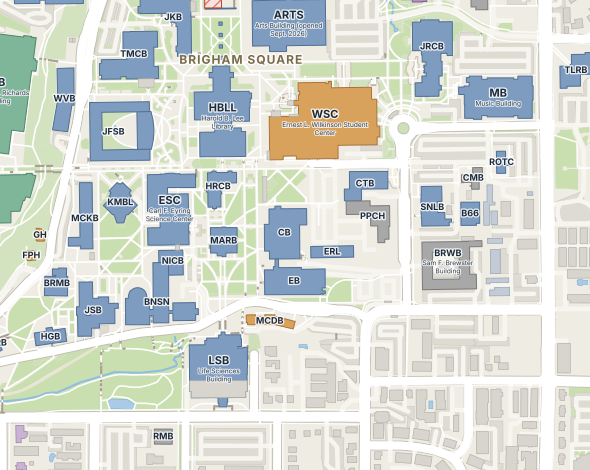

Eat every dot on the BYU walkways. The ghosts leave the Testing Center (HGB) and hunt you across campus. Grab a Creamery cone to turn the tables.
Swipe anywhere to turn · arrow keys / WASD on desktop